금속재료기사 (2013-06-02 기출문제)
1과목: 금속조직학
1. 순철에서 체심입방정에서 면심입방정으로 변태하는 것을 무엇이라 하는가?
- 자기변태
- 상온변태
- 고온변태
- 동소변태
(정답률: 95%)

2. 금속의 구조에 민감한 성질과 관계되는 것은?
- 비열
- 탄성계수
- 전기전도도
- 열팽창계수
(정답률: 76%)
3. 격자 결함 중 면 결함에 해당되는 것은?
- 원자공공
- 적층 결함
- 프렌켈 결함
- 격자간 원자
(정답률: 91%)
4. 면심입방격자인 금속이 응고할 때 결정이 성장하는 우선 방향은?
- [100]
- [001]
- [121]
- [111]
(정답률: 74%)
5. 다음 중 재결정(Recrystallization)에 대한 설명으로 틀린 것은?
- 재결정은 핵생성 및 성장과정이다.
- 핵생성속도가 작고 핵성장속도가 크면 결정립이 크게 성장한다.
- 핵생성속도가 크고 핵성장속도가 작으면 미세한 결정립이 된다.
- 고순도의 금속일수록 재결정화가 어렵기 때문에 고온 풀림처리를 해야 한다.
(정답률: 87%)
6. 확산계수(d)의 단위로 옳은 것은?
- cal/mole
- erg/cm2
- joule/atom
- cm2/sec
(정답률: 89%)
7. 체심입방격자의 (100)면에서의 원자밀도는 얼마인가? (단, 단위격자 한변의 길이는 a이다.)
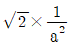
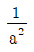
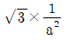
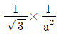
(정답률: 71%)
8. α와 β고용체를 가지는 2성분계의 공정온도에서 자유 에너지 곡선과 공통 접선이 만나는 점의 수는?
- 1
- 2
- 3
- 4
(정답률: 59%)
9. 다음 중 강의 경화능에 영향을 미치는 요인이 아닌 것은?
- 전위의 밀도
- 합금의 양
- 탄소의 양
- 오스테나이트 입자의 크기
(정답률: 63%)
10. 금속 및 비금속의 열전도도가 큰 순서에서 작은 순서로 나열되어 있는 것은?
- Cu > Fe > Mg > Al
- Ag > Cu > Au > Al
- Au > Ag > Fe > Cu
- Cu > Au > Mg > Ag
(정답률: 78%)
11. 결정립 성장 중 결정립계가 구상( 球狀)의 제2상 입자를 만났을 때 일어나는 현상은?
- 결정립 성장은 입자의 영향을 받지 않는다
- 입자표면에서 결정립계를 끌어당기는 힘은 입자가 작을수록 크다.
- 결정립계 이동을 저지하는데 주는 영향은 입자의 크기가 작고 그 수가 많을수록 크다.
- 결정립계 이동을 저지하는데 주는 영향은 입자의 양이 많을수록 작다.
(정답률: 87%)
12. 합금을 주조 할 때 주형틀 벽체부터 응고가 시작되는 가장 타당한 이유는?
- 불순물의 영향때문
- 보다 큰 결정입자의 형성이 쉽기 때문
- 평형상태의 응고반응이 일어나기 때문
- 액체와 고체사이의 계면에너지를 줄일 수 있기 때문
(정답률: 82%)
13. 다음 중 전율가용고용체 합금은 어느 것인가?
- Ni-Cu계
- Cu-Pb계
- Cd-Hg계
- Pb-Sn계
(정답률: 89%)
14. Fe-C 상태도에서 δ고용체+용액→γ고용체의 반응은?
- 석출경화
- 포정반응
- 공석반응
- 편정반응
(정답률: 88%)
15. 금속간 화합물의 특징에 대한 설명 중 틀린 것은?
- 전기저항이 크다.
- 규칙-불규칙 변태가 잘 이루어진다.
- 복잡한 결정구조를 가지며 소성변형이 어렵다.
- 성분금속의 원자가 결정의 단위격자내에서 일정한 자리를 점유하고 있다.
(정답률: 75%)
16. 펄라이트(pearlite)생성에 따른 석출 기구를 순서대로 설명한 것 중 틀린 것은?
- γ-Fe 입계에 δ-Fe의 핵 발생
- Fe3C의 핵 성장
- Fe3C의 주위에 α-Fe 생성
- α-Fe이 생긴 입계에 Fe3C 생성
(정답률: 83%)
17. 다음 중 2차 재결정과 같은 과정은?
- 회복
- Ac1변태
- 핵의 생성
- 이상결정성장
(정답률: 78%)
18. 금속의 면심입방격자에서 원자의 충전율(%)은?
- 58
- 68
- 74
- 84
(정답률: 85%)
19. 규칙-불규칙 변태에서 격자가 완전히 규칙적일 때 의 장범위 규칙도(S)는 얼마인가?
- S = 0
- S = 0.5
- S = 1
- S = 2
(정답률: 89%)
20. 규칙-불규칙 전이에 대하여 옳게 설명한 것은?
- 규칙-불규칙 전이는 넓은 온도범위에 걸쳐 연속적으로 일어나는 협동현상의 일종이다.
- 규칙-불규칙 전이는 일정 온도범위에 걸쳐 불연속적으로 일어나는 협동현상의 일종이다.
- 규칙-불규칙 전이는 넓은 온도범위에 걸쳐 불연속적으로 일어나는 확산현상의 일종이다.
- 규칙-불규칙 전이는 일정 온도범위에 걸쳐 연속적으로 일어나는 확산현상의 일종이다.
(정답률: 66%)
2과목: 금속재료학
21. 일반구조용강에서 강도 40~45kgf/mm2의 C-Mn강이 변형시효경화를 일으키므로 가공을 피해야 하는 온도 범위(°C)는?
- 200 ~300
- 300 ~400
- 400 ~500
- 500 ~600
(정답률: 68%)
22. 탄소강에 Mn을 첨가하는 목적이 아닌 것은?
- 펄라이트를 미세화시킨다.
- 페라이트의 고용강화를 일으킨다.
- 강 중에 존재하는 S와 결합하여 MnS를 형성한다.
- 오스테나이트에서 퀜칭할 때 경화 깊이를 감소시킨다.
(정답률: 73%)
23. 동계 베어링합금에 대한 설명 중 틀린 것은?
- 켈밋(kelmet)은 Cu-Pb계 합금이다.
- Cu-Pb계 베어링은 내소착성이 좋다.
- 저속저하중용 베어링에 사용된다.
- Cu-Pb계 합금은 Pb가 편석하기 쉽다.
(정답률: 76%)
24. 콘스탄탄(constantan)에 관한 설명으로 옳은 것은?
- 열전대선으로 사용된다.
- 구리에 60~70% Ni을 첨가한 합금이다.
- 전기저항은 낮고 온도계수가 높은 합금이다.
- Cu, Fe, Pt에 대한 열기전력 값이 낮다.
(정답률: 71%)
25. 텅스텐계 고속도공구강의 대표적인 조성으로 옳은 것은?
- 18%W - 4%Cr - 1%V
- 18%Mo - 4%Cr - 1%Mn
- 18%W - 4%Mo - 1%V
- 18%Mo - 4%W - 1%Cr
(정답률: 82%)
26. 지르코늄(Zr)의 특성에 대한 설명으로 옳은 것은?
- 비중6.5, 융점1852°C이며, 내식성이우수하다.
- 비중9.0, 융점1083°C이며, 전기저항이작다.
- 비중2.7, 융점660°C이며, 가공성이양호하다.
- 비중7.1, 융점420°C이며, 경도가높다.
(정답률: 81%)
27. 다음 중 강인강에 대한 설명으로 틀린 것은?
- 강인강은 탄소강에 Ni, Cr, Mo, W, V, Ti, Zr 등을 첨가한 강이다.
- 뜨임에 의해 인성이 증가되는 합금강은 0.25%~0.⑤% C강에 Ni, Cr, Mo을 첨가한 것이다.
- Ni-Cr-Mo 강에 Mo은 담금질 질량 효과를 증가시키며 뜨임취성을 촉진시킨다.
- 흑연강은 강 중의 탄소를 흑연상태로 만들어 절삭성과 윤활성을 개선한 것이다.
(정답률: 80%)
28. 기계적 강도, 열적특성 및 내식성 등을 충분히 향상시켜 하중을 지탱하고 열등에 견뎌야하는 구조물 또는 그 부품에 사용하는 파인세라믹스는?
- 바이오 세라믹스(bioceramics)
- 엔지니어링 세라믹스(engineeringceramics)
- 일렉트로닉 세라믹스(electronic ceramics)
- 트레디셔널 세라믹스(traditionalceramics)
(정답률: 89%)
29. 초경합금 구를 사용한 경도 보고서에 600HBW 1/ 30 /20이라고 적혀있을 때 각각의 의미를 설명한 것 중 틀린 것은?
- 600은 브리넬경도 값이 600을 의미한다.
- 1은 구의 체적이 10㎣임을 의미한다.
- 30은 시험하중이 30kgf를 의미한다.
- 20은 누르개를 이용하여 20초 동안시험편을 누르는 시간을 의미한다.
(정답률: 80%)
30. 고강도 알루미늄합금에서 두랄루민과 초초두랄루민계는 어느 계통의 합금인가?
- Al - Cu - Mg 계, Al - Zn - Mg계
- Al - Fe - Mn 계, Al - Si - Mg계
- Al – Mn - Co 계, Al - Mn - Sn 계
- Al - Mg - Sn 계, Al - Cu - Ni계
(정답률: 86%)
31. 다음의 강 중 탄소(C)의 양이 가장 많은 것은?
- 연강
- 경강
- 공정주철
- 탄소공구강
(정답률: 72%)
32. 초전도재료의 어떤 성질이 자기부상열차에 이용되는가?
- 반도체적 특성
- 마이너스 효과
- 암페르 법칙
- 전류제로 효과
(정답률: 85%)
33. 펄라이트와 미세한 흑연의 현미경 조직을 가지며 인장강도 245MPa(25kgf/mm2) 이상의 고급주철을 만드는 여러 공법중에서 Fe-Si, Ca-Si 등 흑연 핵의 생성을 촉진시키는 접종처리를 이용하는 공법은?
- 란쯔법 (Lanzprocess)
- 에멜법 (Emmelprocess)
- 코오살리법 (Corsalliprocess)
- 미이한법 (Meehanprocess)
(정답률: 72%)
34. 마텐자이트(martensite)의 경도가 큰 이유 중 틀린 것은?
- 결정의 미세화
- 급냉으로 인한 내부 응력
- 확산변태에 의한 Fe격자의 약화
- 탄소원자에 의한 Fe격자의 강화
(정답률: 82%)
35. 정련동을 환원성 분위기 중에서 가열할 경우 미소 기포를 형성하거나 Haircrack을 일으키는 현상은?
- 고온 취성
- 상온 취성
- 수소 취성
- 뜨임 취성
(정답률: 74%)
36. 마레이징(maraging)강의 특징을 설명한 것으로 옳은 것은?
- 마레이징강은 탄소함량이 대단히 높다.
- 치환될 원소를 사용하여 Fe-Cr 마텐자이트에서 가공경화를 일으킨다.
- 18% Mn 과 Co, Mo 및 Ce을 첨가한 마레이징강은 초고강도구조용 강으로 개발되었다.
- Ni 함량이 높기때문에 오스테나이트온도에서 냉각하면 마텐자이트로 변태한다.
(정답률: 64%)
37. 내해수성이 좋고 수압이나 증기압에도 잘견디므로 선박용 재료등에 사용되는 실용 주석 청동은?
- 문쯔메탈
- 퍼멀로이
- 하스텔로이
- 애드미럴티 건 메탈
(정답률: 83%)
38. 다음 중 저온과 고압에 사용되는 저온용 강재가 구비해야 할 조건을 설명한 것으로 틀린 것은?
- 용접성이 좋을 것
- 항복점이 낮을 것
- 가공성이 좋을 것
- 내충격성이 좋을 것
(정답률: 86%)
39. 18-8 스테인리스강의 오스테나이트 결정입계에 석출하여 입계부식(intergranularcorrosion) 일으키는 원인이 되는 것은?
- 황화물 입자
- 탄화물 입자
- 산화물 입자
- 질화물 입자
(정답률: 71%)
40. 다음 중 금속 초미립자의 특성을 설명한 것으로 틀린 것은?
- 저온에서 열저항이 매우 작아 열의 부도체이다.
- Cr계 합금 초미립자는 빛을 잘 흡수한다.
- 표면장력이 크므로 내부에 수십 기압의 높은 압력이 발생한다.
- Fe계 합금 초미립자는 금속덩어리보다 자성이 강하므로 자성재료로 이용된다.
(정답률: 75%)
3과목: 야금공학
41. 노외제련법 중 진공장치 또는 진공설비를 이용하는 제련법이 아닌 것은?
- LF법
- VOD법
- VAD법
- ASEA-SKF법
(정답률: 82%)
42. 깁스-듀헴식(Gibbs-Duhem equation)은 어떤 경우에 쓰여지는가?
- 직접 자유에너지를 구할 수 있다.
- 직접 활동도를 계산할 수 있다.
- 활동도계수를 바로 계산한다.
- 두성분으로 된 용액에서 한 성분에 대한 열역학적 인 양을 알면 다른 성분에 대한 양을 계산한다.
(정답률: 83%)
43. 1mole의 이상기체가 등온하에서 처음부피의 두배로 팽창했다면 엔트로피(ΔS)양 (J/mol∙K)은 얼마인가?
- 5.7631
- 6.6107
- 7.4475
- 8.2843
(정답률: 63%)
44. 25°C에서 10L의 이상기체를 1.5L까지 등온 가역적으로 압축하였을 때 주위로부터 9400J의 일을 받았다. 이 이상 기체는 약 몇 mol인가?
- 0.48
- 2
- 23.8
- 613
(정답률: 67%)
45. 어떤 계의 변화에서 표준 깁스자유에너지의 변화 ΔG°는?
- 압력의함수
- 활동도의함수
- 온도의함수
- 활동도계수의함수
(정답률: 66%)
46. 강의 탈인(P)을 촉진하기 위한 조건이 아닌 것은?
- 염기도가 높아야 한다.
- 강욕온도가 낮아야 한다.
- 산화성 분위기를 유지해야 한다.
- 강재 중의 P2O5의 성분이 높아야 한다.
(정답률: 76%)
47. 다음 열역학의 기본식 중 틀린 것은? (단, A : Helmholtz 자유에너지, G : Gibbs 자유에너지, E :내부에너지이다.)
- dE=TaS-RdV+∑μidni
- dG=SdT-VdP+∑μidni
- dA=-SdT-PdV+∑μidni
- dH=TdS+VdP+∑μidni
(정답률: 52%)
48. 1606°C 에서 액체 Fe 중에 N2기체의 용해도는 PN2=1atm일 때 0.045wt%이다. 이온도에서 PN2=0.16atm일 때 N2의 용해도는 몇 wt%인가? (단, N2의 용해도는 Sievert's law 에 따른다.)
- 0.072
- 0.014
- 0.018
- 0.028
(정답률: 54%)
49. 다음 중 염기성 내화물에 해당되는 것은?
- 규석연와
- 납석연와
- 샤모트연와
- 돌로마이트연와
(정답률: 83%)
50. 용융 연화점이 약 1580°C인 내화물은 제게르추 번호로 몇 번인가?
- SK26
- SK30
- SK33
- SK39
(정답률: 78%)
51. 습식 제련에서 침출속도에 미치는 영향을 설명한 것 중 틀린 것은?
- 침출속도는 온도가 높을수록 커진다.
- 침출속도는 침출제의 농도가 증가하는데 따라 증가한다.
- 광립이 커질수록 표면적이 작아지므로 침출속도는 저하한다.
- 유공성의 경우 불용성 반응물질이 침출 할 때 발생하면 침출속도는 증가한다.
(정답률: 54%)
52. QSL 연제련법의 특징을 설명한 것 중 틀린 것은?
- QSL로에서는 산화, 환원반응이 동시에 일어난다.
- 장입되는 원료의 품위, 수분함량 등에 민감하므로 항상 품위는 높고, 수분이 없게 건조하여 사용한다.
- QSL로에서의 각종 반응시 발생하는 발생열로 열원을 공급하며, 특별한 경우를 제외하고는 추가로 열 원공급이 불필요하다.
- 장입된 원료가 밀폐된 QSL로에서 반응하고, 또한 발생되는 가스는 밀폐된 연진 등을 통하여 전량 후 속공정으로 보내진다.
(정답률: 67%)
53. 두 상 사이에 평형이 유지되기 위한 온도 변화와 압력변화 사이의 클라우시우스-클레페이론 관계식은?
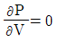
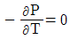
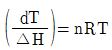
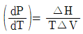
(정답률: 73%)
54. 반데르발스 식 (vanderWaalsequation)은 1mol에 대하여 다음과 같이 표현된다. 여기서 P=압력, V=부피, R=기체상수, T=절대온도, a 및 b=기체에 따라 달라지는 상수이다. n몰에 대한식으로 옳은 것은?
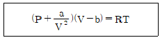
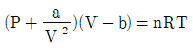
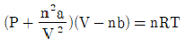
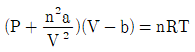
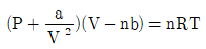
(정답률: 75%)
55. 주어진 온도의 전 조성 범위에서 용액상이 안정하다면 두 금속으로 이루어진 A-B 용액의 다음 열역 학적인 성질에서 틀린 것은?
- 활동도는 항상 1보다 작다.
- 순수 성분B 보다 용액 내 B 성분이 산화가 잘 안된다.
- 혼합 자유에너지(△Gmix)는전조성범위에걸쳐아래로볼록하다.
- 용액내에 XA=0에 가까운 조성에서 B의 분몰자유에너지 값은 0(zero)이다
(정답률: 53%)
56. 다음의 표현중에서 열역학적 평형을 나타내는 것이 아닌 것은?
- 온도구배가 시간에 따라 변화하지 않는다.
- 엔트로피가 최대값이다.
- 내부에너지의 변화가 없다.
- 자유에너지의 변화가 없다.
(정답률: 61%)
57. 제선 조업 시 로정 가스의 로황을 판단하는데 주로 이용되는 것은?
- CO/N2
- CO/CO2
- CO2/N2
- CO/H2
(정답률: 74%)
58. 다음 반응은 500K에서 B(g)와 AB(g)의 분압이 PB(g)=0.2기압, PAB(g)=0.8기압에서 평형을 이룬다. A(s)+B(g)=AB(g), 500K에서 고체A(s) 위에 부피비로, 20%B(g), 20%AB(g), 60%아르곤의 혼합가스를 통과시키면 어느 방향으로 반응이 진행되는가?
- 정방향
- 역방향
- 알 수 없다.
- 평형상태로 유지된다.
(정답률: 81%)
59. 리차드법칙에 의하면 금속의 분자 융해열과용융점 간에
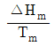
가 일정범위의 값을 갖을 때의 의미로 옳은 것은?- 금속의 종류에 관계없이 융해열이 일정하다.
- 원자량 또는 분자량이 크면 융해열이 많이 필요하다.
- 용융점이 높은 금속일수록 많은 융해열이 필요하다.
- 상태의 변화에는 금속에 관계없이 일정량의 열이 필요하다.
(정답률: 82%)
60. 반데르발스 기체는 이상기체 특징의 일부분을 수정한기체이다. 반데르발스 기체의 특징으로 옳은 것은?
- 부피와 상호작용력이 없다.
- 분자간 상호작용력은 있다.
- 압력이 증가하여도 액화가 되지 않는다.
- 기체 입자의 부피는 이상기체와 같이 없다.
(정답률: 79%)
4과목: 금속가공학
61. 완전전위의 Burgersvector를 b라 하고 그 부분전 위의 Burgersvector를 각각b1 ,b2라고 하면 완전 전위가 부분전위로 나누어지는 조건은?
- b2 ＜ b21 + b22
- b2 ＞ b21+b22
- b ＜ b1+b2
- b ＞ b1+b2
(정답률: 76%)
62. 금속의 강화방법 중 고온에서 유효도가 좋은 것은?
- 가공강화
- 석출강화
- 이물질분산강화
- 마텐자이트강화
(정답률: 61%)
63. 충격 시험에 관한 설명 중 틀린 것은?
- 취성재료일수록 충격 에너지의 값이 크다.
- 샤르피형 충격시험기가 있다.
- 동적 하중에 대한 시험이다.
- 충격 시험편에는 노치가 있다.
(정답률: 82%)
64. 다음 중 소성가공 범주에 해당되지 않는 가공 방법은?
- 피어싱
- 드로잉
- 다이캐스팅
- 직접압출
(정답률: 69%)
65. 결정 중의 슬립면 위에서 전위를 움직이기 위하여 필요한 힘을 무엇이라 하는가?
- Peierls - Nabarro force
- Shear stress force
- Deviatoric strain force
- Hydrostatic Pressure force
(정답률: 69%)
66. 알루미늄의(111)면상에서 전위가 slip한다면 그 전위의 Burgersvector는? (단, unitcell의 한 변의 길이는 a이다.)
- a[110]
- a/2[001]
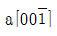
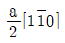
(정답률: 70%)
67. 그림은 FCC 단결정의 인장축 방향에 따른 유동곡 선의 변화를 나타낸 것이다. 인장축이 (011)방향에 평행한 경우에 해당되는 진응력-진변형률 곡선은?
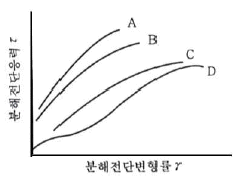
- A
- B
- C
- D
(정답률: 75%)
68. Cd와 같은 육방정계 금속을 슬립면과 수직하게 압축하였을 때 밴드(band)가 생기는 변형은?
- 킹크(Kinking)
- 슬립(Slip)
- 쌍정(Twinning)
- 전위(Dislocation)
(정답률: 77%)
69. 파괴 과정 중에 소성변형이 거의 없고 균열의 전파 속도가 빠른 파괴는?
- 연성파괴
- 취성파괴
- 전단파괴
- 컵-원뿔형(cup-and-cone)파괴
(정답률: 91%)
70. 소성체 경계의 표면에서 최대 전단응력 방향과 일치하는 슬립선은 주응력 방향과 몇 도를 이루며 일어나는가?
- 0°
- 45°
- 60°
- 90°
(정답률: 76%)
71. 열피로를 감소시키기 위한 방안으로 틀린 것은?
- 선열팽창계수가 작은 재료를 선택한다.
- 탄성계수가 작은 재료를 선택한다.
- 열전도도가 작은 재료를 선택한다.
- 피로강도가 큰 재료를 선택한다.
(정답률: 51%)
72. 금속의 냉간 가공과 관련한 설명으로 옳은 것은?
- 냉간가공 할수록 전위의 밀도가 증가한다.
- 냉간가공을 하면 일반적으로 강도가 감소한다.
- 냉간가공을 하면 일반적으로 연신율이 증가한다.
- 냉간가공도와 전위의 밀도와는 무관하다.
(정답률: 82%)
73. FCC 금속에서 교차 슬립(cross slip)이 발생하기 어려운 경우는?
- 고온일수록
- 가공도가 높을수록
- 적층 결함에너지가 높을수록
- 적층 결함에너지가 낮을수록
(정답률: 66%)
74. 용융상태의 금속을 냉각시킬 때 형성되는 결정입자의 크기에 영향을 미치지 않는 것은?
- 불순물
- 결정격자
- 냉각속도
- 결정핵 사이의 간격
(정답률: 67%)
75. 굽힘가공 시 스프링백(spring back)에 관한 설명으로 틀린 것은?
- 항복응력이 클수록 스프링백이 증가한다.
- 탄성계수가 클수록 스프링백이 증가한다.
- 소성변형이 클수록 스프링백이 증가한다.
- 재료와 변형이 일정하면 판의 두께와 폭의 비가 증가 할수록 스프링백이 증가한다.
(정답률: 68%)
76. 다음 중 조질압연의 목적이 아닌 것은?
- 두께감소
- 형상교정
- 표면조도 조정
- 스트레처 스트레인 제거
(정답률: 70%)
77. 3개의 주응력 σ1, σ2, σ3의 관계가 σ1 ＞ σ2 ＞ σ3이다. 항복응력이 k라면 단축인장에서의 항복 조건은?
- σ1-σ2=2k
- σ2-σ1=2k
- σ2=2k
- σ1=2k
(정답률: 75%)
78. 연성 시험법으로 판을 금형 사이에 물리고 이 판에 균열이 생길 때까지 펀치를 눌러, 그 깊이를 mm 단위로 나타내는 성형 시험 방법은?
- Deep drawing test
- Erichsen test
- Conical cup test
- Tensile strength test
(정답률: 79%)
79. 크리프 곡선에서 크리프의 속도가 거의 일정하게 나타나는 영역은?
- 초기 순간변형 영역
- 제 1 기크리프
- 제 2 기크리프
- 제 3 기크리프
(정답률: 81%)
80. 어느 방향으로 소성변형을 가한 재료에 역방향의 하중을 가하면 전과 같은 방향으로 하중을 가한 경우보다 소성변형에 대한 저항이 감소하는 현상은?
- 코트렐 효과
- 표피 효과
- 바우싱거 효과
- 변형경화 효과
(정답률: 87%)
5과목: 표면공학
81. 이온도금의 특징이 아닌 것은?
- 밀착력이 우수하다.
- 기판(substrate)의 뒷면에도 비교적 증착이 되는 편이다.
- 이온 상태로 도금층 격자내에 도금된다.
- 도금속도는 진공증착보다는 느리다.
(정답률: 44%)
82. 용융도금은 저융점의 금속을 용해시킨 용융도금조에 전처리된 제품을 침지하여 표면에 용융된 금속을 피복하는 방법으로 공업적으로 용융도금에 적합하지 않는 금속은?
- Zn
- Sn
- Al
- Ti
(정답률: 79%)
83. 고온용 염욕제로서 고속도공구강을 염욕 열처리하려고 할 때 사용되는 단일염은?
- NaNO3
- NaCl
- BaCl2
- KNO3
(정답률: 80%)
84. 다음 중 침탄 후 담금질시 담금질 온도가 너무 낮거나, 냉각속도가 너무 느릴 때 발생하기 쉬운 결함은?
- 박리
- 균열
- 탈탄
- 경도불량
(정답률: 62%)
85. TEM에서 결정질 재료에 대한 분석으로 하고자 할 때 분석 대상이 아닌 것은?
- 파단면을 관찰하고 분석한다.
- 결정의 방위를 해석한다.
- 국부영역에 대한 상분석을 한다.
- 전위의 관찰과 버거스벡터, 밀도, 배열에 대한 분석을한다.
(정답률: 60%)
86. 양극산화처리 후 유기염료 처리에 대한 설명 중 틀린 것은?
- 유기염료에는 산성, 직접, 염기성, 매염 등이 있다.
- 착색작업에서 주의할 점은 피막생성 후 절대 손을 대서는 안 된다.
- 산화피 막용 염료의 양부는 색조, 작업성, 퇴색성, 내열성 등에 의해 결정된다.
- 탈색을 방지하기 위하여 중조 12~15% 용액을 30°C 이하에서 20분간 침지해서 중화, 수세 후 염색한다.
(정답률: 84%)
87. Floating Voltage에 대한 설명으 로옳은 것은?
- Bias Voltage와 같은 의미이다.
- Probe에서 측정되는 Voltage 이다.
- 기판에 인가되는 Voltage 이다.
- Anode에 인가한 Voltage 이다.
(정답률: 73%)
88. 강의 경화능에 영향을 미치는 주요 인자가 아닌 것은?
- 탄소량
- 잔류응력
- 합금 원소량
- 오스테나이트의 결정입도
(정답률: 64%)
89. 이온도금을 분류할 때 저온 플라즈마를 이용한 방식이 아닌 것은?
- 직류방전방식(DC법)
- 고주파방전방식(RF법)
- 이온 빔 증착방식
- 활성반응증착방식
(정답률: 69%)
90. 자동차 라디에이터 그릴(RadiatorGrill)은 ABS소재에 금속 도금을 하여 장식성과 내식성을 부여하고자 할 때 소재에 칭(Etching)공정에 사용되는 주요 약품 성분은?
- 크롬산(CrO3) -황산(H2SO4)
- 염화주석(SnCl2) -염산(HCI)
- 과산화수소(H2O2) -황산(H2SO4)
- 염화주석(SnCl2)-염화팔라듐(PdCl2)
(정답률: 84%)
91. 전기도금에 비한 무전해 도금에 대한 특징으로 틀린 것은?
- 정류기가 필요하다.
- 도금의 속도가 느리다.
- 비금속 소재에도 도금이 가능하다.
- 도금액 관리를 엄격하게 해야한다.
(정답률: 74%)
92. 진공챔버(Vacuum Chamber)내에 플라즈마가 형성되었을 때 다음 중 존재하지 않는 것은?
- 전자
- Ar+이온
- Ar 기체분자
- 천이원소
(정답률: 80%)
93. 주사전자현미경에 관한 이론 중 상호작용 부피(inter-action volume)에 관한 설명으로 틀린 것은?
- 산란단면은 가속전자 에너지의 제곱에 비례하여 증가한다.
- 상호작용 부피는 시편의 원자번호가 증가할수록 감소한다.
- 입사빔의 각도가 직각에서 벗어남에 따라 상호작용 부피가 감소한다.
- 상호작용 부피는 시료 표면에서 탄성산란의 증가와 단위거리당 에너지 손실의 증가로 공모양으로 변화한다.
(정답률: 41%)
94. D.C스퍼터링(Sputtering)에 대한 설명으로 틀린 것은?
- 비교적 구석구석 도금이 잘된다.
- 조성이 복잡한 것도 적용시킬 수 있다.
- 고에너지로 기판에 들어오게 되므로 밀착 강도가 높다.
- 전류량과 생성피막의 두께가 반비례하므로 콘트롤이 쉽다.
(정답률: 76%)
95. 다음 중 CVD증착에 대한 설명으로 틀린 것은?
- 비교적 접착력이 좋은 표면이 얻어진다.
- 이론에 가까운 밀도로 증착할 수 있다.
- 미립자의 코팅에는 적용할 수 없다.
- Throwing Power가 좋다.
(정답률: 87%)
96. 화염 경화 처리법의 특징으로 틀린 것은?
- 담금질 변형이 작다.
- 국부적인 담금질이 가능하다.
- 가열 온도의 조절이 쉽다.
- 부품의 크기와 형상에 제한이 없다.
(정답률: 60%)
97. 질화법에 대한 설명으로 옳은 것은?
- 질화후에 수정이 가능하다.
- 침탄층의 경도는 질화층보다 높다.
- 처리강의 종류에 많은 제한을 받는다
- 질화후에 열처리가 필요하다.
(정답률: 73%)
98. 오스테나이트 스테인리스강(STS 304)의 고용화 열처리에 관한 설명 중 틀린 것은?
- 고용화 열처리 온도가 높을수록 탄화물의 고용이 많아진다.
- 고용화 열처리에 의한 냉간가공이나 용접에 의해서 생긴 내부응력이 증가한다.
- 열간가공이나 용접에 의해 석출한 Cr 탄화물과 σ상을 고용시키며 연성이 개선되고, 내식성이 향상된다.
- 1100℃에서 가열 유지한 후 상온까지 급냉하면 상온에서도 오스테나이트가 생성된다.
(정답률: 41%)
99. 알루미늄의 착색성을 오래 유지하기 위한 방법이 아닌 것은?
- 자연발색
- 전해착색
- Dying착색
- Sealing
(정답률: 48%)
100. 고탄소강은 탄소 (C)함량이 0.5%이상, HRC 40이상의 철소재로서 표면처리 공정에서 수소취성을 일으킬 수가 있다. 수소취성을 최소화하기 위한 표면처리 공정이 아닌 것은?
- 전해탈지는 양극을 사용한다.
- 전류효율이 높은 도금욕을 선택한다.
- 침지 탈지 후 전해탈지는 음극을 사용한다.
- 산처리조에 부식 억제제를 첨가한다.
(정답률: 61%)